1. ВВЕДЕНИЕ
Ничего интересного, основной обзор семейств Cortex, ARM7 и ARM9.
2. АРХИТЕКТУРА
Регистры
ЦПУ Cortex является RISC-процессором, который выполнен по архитектуре чтения/записи. Для выполнения операций обработки данных вначале необходимо поместить операнды из памяти в центральный регистровый файл, затем выполнить требуемуюоперацию над данными в регистрах и, наконец, перезаписать результат обратно в память.
Данный регистровый файл образуют шестнадцать 32-битных регистров.
Регистры R0-R12 - обычные регистры, которые могут использоваться для хранения программных переменных.
У регистров R13-R15 имеются особые функции в рамках ЦПУ Cortex.
Регистр R13 выступает в роли указателя стека. Данный регистр является банковым, что делает возможной работу ЦПУ Cortex в двух режимах работы, в каждом из которых используется свое собственное пространство стека. Данная возможность обычно используется операционными системами реального времени (ОСРВ), которые могут выполнять свой "системный" код в защищенном режиме. У двух стеков ЦПУ Cortex имеются собственные наименования: основной стек и стек процесса.
Регистр R14 называется регистром связи. Он используется для хранения адреса возврата из подпрограммы. Благодаря нему, ЦПУ Cortex быстро переходит к подпрограмме и выходит из нее. Если же в программе используется несколько уровней вложений подпрограмм, то компилятор будет автоматически сохранять R14 в стек.
Последний регистр R15 - счетчик программы; поскольку он является частью центрального регистрового файла, его чтение и обработка может выполняться аналогично любым другим регистрам.
XPSR
Помимо регистрового файла, имеется отдельный регистр, который называется регистром статуса программы. Он не входит в основной регистровый файл, а доступ к нему возможен с помощью двух специальных инструкций. В xPSR хранятся значения полей, влияющих на исполнение инструкций ЦПУ Cortex.
Первые четыре флага кода условия N, Z, C, V(индикация отрицательного (N) или нулевого (Z) результата, переноса (C) и переполнения (V)) устанавливаются и сбрасываются по итогам выполнения инструкции обработки данных. Пятый бит Q используется при выполнении математических инструкций с насыщением алгоритмов цифровой обработки сигналов (ЦОС) для индикации достижения переменной своего максимального или минимального значения.
Некоторые инструкции Thumb-2 выполняются только при условии совпадения кода условия инструкции и состояния флагов регистра статуса прикладной программы. Если коды условия инструкции не совпадают, то инструкция проходит по конвейеру как NOP (нет операции). Эта реализация связана с битами 26-8 регистра xPSR. Этот регистр состоит из трех полей: поле "If then" (IT), поле возобновляемой прерыванием инструкции и поле инструкции Thumb.
Если проверяемое условие истинно, записью значения в поле IT можно сигнализировать ЦПУ о необходимости выполнения до четырех следующих инструкций. Если же проверяемое условие - ложное, то данные инструкции пройдут по конвейеру как NOP. Этим гарантируется равномерность прохождения инструкций по конвейеру и минимизируется число перезагрузок конвейера.
MEMORY MAP

BIT BANDING
У предшествующих ЦПУ ARM битовые операции в статическом ОЗУ можно было выполнять только с помощью инструкций AND и OR. Для этого необходимо выполнить последовательность ЧТЕНИЕ - МОДИФИКАЦИЯ - ЗАПИСЬ. Однако использование этого метода приводит к чрезмерному расходованию количества циклов на выполнение установки и сброса отдельных бит и увеличению результирующего кода программы.
Способ, называемый bit banding, позволяет напрямую воздействовать на биты в памяти из областей УВВ и статического ОЗУ, не используя при этом каких-либо специальных инструкций. Битноадресуемые области карты памяти Cortex разделены на две части: область хранения бит (в нее входят до 1 Мбайт физической памяти или регистров УВВ) и область доступа к битам, которая занимает до 32 Мбайт карты памяти. Получить доступ к каждому отдельному биту из области хранения бит можно по соответствующему адресу слова из области доступа к битам. Таким образом, если выполнять запись по адресу в области доступа к битам на самом деле мы будем воздействовать на значение определенного бита в физической памяти.
В итоге, мы можем воздействовать на значение отдельных бит, не прибегая, при этом, к использованию специальных инструкций и сохраняя результирующие размеры ядра Cortex на минимально возможном уровне. Чтобы использовать этот метод на практике, необходимо вычислить адрес слова в области доступа к битам, который соответствует заданной ячейки памяти из области УВВ или статического ОЗУ. Выполняется это по следующей формуле:
Адрес в области доступа к битам = Базовый адрес области доступа к
битам + Смещение адреса слова доступа к биту,
где Смещение адреса слова доступа к биту = Смещение в байтах по
отношению базовому адресу области хранения бит х 0x20 + номер бита х 4
На самом деле все обстоит гораздо проще, чем может показаться на первый взгляд. Рассмотрим практический пример. Необходимо выполнить запись в выходной регистр порта ввода-вывода (ПВВ) для установки или сброса отдельных линий ввода-вывода. Физический адрес выходного регистра порта В - 0x40010C0C. Предположим, что нужно устанавливать и сбрасывать бит 8 этого регистра. Воспользуемся приведенной выше формулой:
Адрес слова = 0x40010C0C
Базовый адрес области хранения бит УВВ = 0x40000000
Базовый адрес области доступа к битам УВВ = 0x42000000
Смещение в байтах по отношению базовому адресу области хранения бит = 0x40010C0C - 0x40000000 = 10C0C
Смещение адреса слова доступа к биту = (0x10С0С x 0x20) +(8x4) = 0x2181A0
Адрес в области доступа к битам = 0x42000000 + 0x2181A0 = 0x422181A0
Теперь мы можем создать указатель на этот адрес с помощью следующей Си-строки:
#define PortBbit8 (*((volatile unsigned long *) 0x422181A0 ))
После этого, этот указатель можно использовать для установки и сброса бит ПВВ:
PB8 = 1; //включаем светодиод
После компиляции будут сгенерированы следующие ассемблерные инструкции:
MOVS r0,#0x01
LDR r1,[pc,#104]
STR r0,[r1,#0x00]
Для отключения светодиода используем строку:
PB8 = 0; // отключаем светодиод
Ей соответствуют следующие ассемблерные инструкции:
MOVS r0,#0x00
LDR r1,[pc,#88]
STR r0,[r1,#0x00]
Таким образом, для установки или сброса бита необходимо выполнить три 16-битных инструкции. Микроконтроллер STM32, работающий на частоте 72 МГц, выполнит их за 80 нс. Альтернативно установку или сброс бита можно выполнить, если применить логическую операцию "ИЛИ" или "И" ко всему слову из области хранения бит УВВ или статического ОЗУ:
GPIOB->ODR |= 0x00000100; //Включение светодиода
LDR r0,[pc,#68]
ADDS r0,r0,#0x08
LDR r0,[r0,#0x00]
ORR r0,r0,#0x100
LDR r1,[pc,#64]
STR r0,[r1,#0xC0C]
GPIOB->ODR &=!0x00000100; //Отключение светодиода
LDR r0,[pc,#40]
ADDS r0,r0,#0x08
LDR r0,[r0,#0x00]
MOVS r0,#0x00
LDR r1,[pc,#40]
STR r0,[r1,#0xC0C]
Но в таком случае, одна операция установки/сброса потребует выполнения смеси 16- и 32-битных инструкций, которые займут минимум 14 байт и на той же тактовой частоте будут выполняться как минимум 180 нс. Таким образом, в программе, где используется установка/сброс множества бит в регистрах УВВ, а также применяются семафоры и флаги в статическом ОЗУ, использование метода bit banding позволит существенно сэкономить, как размер кода программы, так и время его выполнения.
Системный таймер
В ядро Cortex входит 24-битный вычитающий счетчик с функциями автоматической перезагрузки и генерации прерывания. Он называется таймером SysTick и предназначен для использования в качестве стандартного таймера во всех Cortex-микроконтроллерах. Таймер SysTick может использоваться для формирования шкалы времени в ОСРВ или для генерации периодических прерываний для обработки запланированных задач. С помощью регистра управления и статуса таймера SysTick, который расположен в области системных ресурсов процессора Cortex-M3, пользователь может выбрать источник синхронизации таймера. Если установить бит CLKSOURCE, то таймер SysTick будет работать на тактовой частоте ЦПУ. Если же его сбросить, то таймер будет работать на частоте, равной 1/8 тактовой частоты ЦПУ.
У таймера SysTick имеется три регистра. Для задания периодичности счета необходимо инициализировать регистр текущего значения и регистр перезагружаемого значения. В регистре управления и статуса имеются биты ENABLE, позволяющий активизировать работу таймера, и TICKINT, управляющий активностью линии прерывания таймера.
Прерывания
После перехода ЦПУ Cortex в режим прерывания, он помещает набор регистров в стек. К числу помещаемых в стек данных относятся регистр статуса программы, счетчик программы и регистр связи. Благодаря этому, запоминается состояние, в котором находилось ЦПУ Cortex CPU. Кроме того, также сохраняются регистры R0 - R3. Эти регистры широко используются в инструкциях для передачи параметров, поэтому, помещение в стек делает возможным их использование в процедуре обработке прерывания. Замыкает список помещаемых в стек регистров - R12. Он выступает в роли рабочего регистра внутри подпрограммы. Например, если в компиляторе активизировать проверку стека, то будет генерироваться дополнительный код, который при потребности в регистре ЦПУ будет использовать R12.
КВВП имеет возможность приостановки находящегося на обработке прерывания, если возникает прерывание с более высоким приоритетом. В этом случае, обработка активного прерывания прекращается, в течение последующих 12 циклов выполняется сохранение в стек нового набора данных и запускается обработка высокоприоритетного прерывания. По завершении его обработки, содержимое стека автоматически извлекается и обработка низкоприоритетного прерывания возобновляется.
Если возникает два прерывания, первым со стандартной задержкой в 12 цикловобслуживается прерывание с более высоким приоритетом. Однако, по окончании его обработки, ЦПУ Cortex не возвращается к выполнению фоновой программы и содержимое стека не извлекается. Вместо этого, осуществляется выборка адреса процедуры обработки следующего прерывания с учетом приоритета. Таким образом, задержка перехода к обработке следующего прерывания составит всего лишь 6 циклов.
По завершении обработки последнего прерывания извлекается содержимое стека и выполняется выборка адреса возврата. Таким образом, через 12 циклов возобновляется выполнение фоновой программы. Если же во время выхода из активного прерывания возникает еще одно низкоприоритетное прерывание, то операция извлечения из стека прекращается и указатель стека вернется к своему исходному значению, а выполнение обработки нового прерывания начнется через 6 дополнительных циклов. В итоге, задержка вызова процедуры обработки нового прерывания будет в пределах 7-18 циклов.
Чтобы включить в работу КВВП необходимо выполнить три действия. Вначале сконфигурировать таблицу векторов используемых прерываний. Затем настроить регистры КВВП с целью активизации и установки уровней приоритета прерываний КВВП. И, наконец, настроить УВВ и разрешить поддержку ими прерываний.
Таблица векторов прерывания
Каждый из векторов прерываний занимает 4 байта и указывает на начальный адрес каждой конкретной процедуры обработки прерывания. Первые 15 векторов - адреса обработки исключительных ситуаций, возникающих в ядре Cortex. Начиная с 16 вектора, следуют адреса обработки прерываний пользовательских УВВ. В программе таблица векторов обычно приводится в отдельном файле и содержит адреса процедур обработки прерываний:
AREA RESET, DATA, READONLY
EXPORT __Vectors
__Vectors DCD __initial_sp ; Верхняя граница стека
DCD Reset_Handler ; Обработчик сброса
DCD NMI_Handler ; Обработчик немаскируемого прерывания
DCD HardFault_Handler ; Обработчик аварий типа HardFault
DCD MemManage_Handler ; Обработчик аварий блока защиты памяти
DCD BusFault_Handler ; Обработчик аварий типа BusFault
DCD UsageFault_Handler ; Обработчик аварий типа UsageFault
DCD 0 ; Резерв
DCD 0 ; Резерв
DCD 0 ; Резерв
DCD 0 ; Резерв
DCD SVC_Handler ; Обработчик программно-сгенерированного прерывания
DCD DebugMon_Handler ; Обработчик прерывания встроенной отладочной системы
DCD 0 ; Резерв
DCD PendSV_Handler ; Обработчик PendSV
DCD SysTick_Handler ; Обработчик прерывания таймера SysTick
Например, если используется прерывание таймера SysTick, то объявление на Си процедуры обработки прерывания выполняется следующим образом:
void SysTick_Handler (void) { }
Теперь, когда сконфигурирована таблица векторов и объявлена процедура обработки прерываний, мы можем настроить КВВП на обработку прерывания таймера SysTick. Обычно, для этого выполняют две операции: задается приоритет прерывания, а затем разрешается источник прерывания. Регистры КВВП расположены в области системных ресурсов.
Для настройки прерывания SysTick нам необходимо активизировать сам таймер и его прерывание с помощью соответствующего регистра управления:
SysTickCurrent = 0x9000; //Начальное значение счетчика SysTick
SysTickReload = 0x9000; //Перезагружаемое значение
SysTickControl = 0x07; //Запуск счета и разрешение прерывания
Приоритет каждой внутренней исключительной ситуации Cortex можно задать в системных регистрах приоритета. У исключительных ситуаций Reset, NMI и hard fault он фиксированный. У всех остальных исключительных ситуаций имеется восьмибитное поле, которое расположено в трех системных регистрах
приоритета. МК STM32 используют только 16 уровней приоритета (0 - наиивысший, 15 - низший), поэтому, у них активно только 4 бита этого поля. Однако важно запомнить, что приоритет устанавливается четырьмя старшими битами.
Если взять в качестве примера прерывание АЦП, то вначале необходимо установить вектор прерывания и создать процедуру обработки прерываний:
DCD ADC_IRQHandler ;
void ADC_Handler void { }
Затем необходимо инициализировать АЦП и разрешить прерывание в регистрах УВВ и КВВП:
ADC1->CR2 = ADC_CR2; //Включение АЦП в режиме непрерывныхпреобразований
ADC1->SQR1 = sequence1; //Выбор номеров каналов в очереди преобразования
ADC1->SQR2 = sequence2; //и выбор каналов для преобразования
ADC1->SQR3 = sequence3;
ADC1->CR2 |= ADC_CR2; //Перезапись бита включения
ADC1->CR1 = ADC_CR1; //Запуск группы каналов, разрешение прерывания АЦП
GPIOB->CRH = 0x33333333; //Настройка светодиодных выводов на выход
NVIC->Enable[0] = 0x00040000; //Разрешение прерывания АЦП
NVIC->Enable[1] = 0x00000000;
Режимы работы, влияющие на энергопотребление
Для перевода ядра Cortex в режим SLEEP необходимо выполнить инструкцию WFI (Wait for Interrupt) или WFE (Wait for Event).
После выполнения инструкции WFI, ядро Cortex приостановит выполнение программы и обработку отправленных прерываний. Существует два сценария завершения выполнения процедуры обработки прерывания. По первому сценарию ЦПУ выходит из процедуры обработки прерывания и возвращается к дальнейшему выполнению фоновой программы. Однако, если установить бит SLEEPON EXIT в регистре системного управления, ядро Cortex после выхода из процедуры обработки прерываний автоматически перейдет в режим SLEEP.
Прерывание WFE позволяет возобновить работу ядра Cortex с того же места, с которого оно было переведено в режим SLEEP. Это прерывание не приводит к переходу к процедуре обработки прерывания. Возобновляющее работу событие - это обычная линия прерывания УВВ, но которая на активизирована как прерывание.
Компиляторы поддерживают встроенные макросы, которые можно использовать в программе, как стандартные Си-команды:
__WFI
__WFE
Помимо экономичных режимов работы SLEEPNOW и SLEEPONEXIT, ядро Cortex может генерировать сигнал SLEEPDEEP для остальной части микроконтроллерной системы.
Питание
Для работы микроконтроллеров STM32 их необходимо питать одним напряжением в диапазоне от 2.0┘3.6В. Для питания ядра Cortex напряжением 1.8В в МК интегрирован стабилизатор напряжения. Однако к STM32 может быть подано еще два опциональных напряжения питания. В домене с отдельным питанием расположены часы реального времени и небольшое число регистров, что позволяет организовать их резервное питание и обеспечить работоспособность даже при нахождении МК в режиме полного отключения (deep power down). Если же в схеме данная функция не нужна, то вывод VBAT необходимо соединить с VDD.
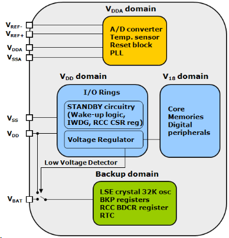
торое опциональное напряжение питания предназначено для АЦП. Если АЦП задействован, то диапазон основного напряжения питания VDD сужается до 2.4┘3.6В. У МК в 100-выводных корпусах имеются дополнительные выводы источника опорного напряжения (ИОН) АЦП, VREF+ и VREF-. Вывод VREF- должен быть соединен с VDDA, а напряжение на VREF+ может варьироваться от 2.4В до VDDA. У МК во всех остальных корпусах ИОН соединен внутренне с выводами питания АЦП. На каждом из входов питания необходимо предусмотреть стабилизационные конденсаторы, как показано ниже.
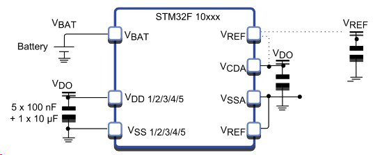
В МК STM32 входит схема сброса, которая удерживает его в сброшенном состоянии до тех пор, пока VDD будет ниже 2.0В (гистерезис 40 мВ).
3. НАЧАЛО РАБОТЫ
Основная схема включения
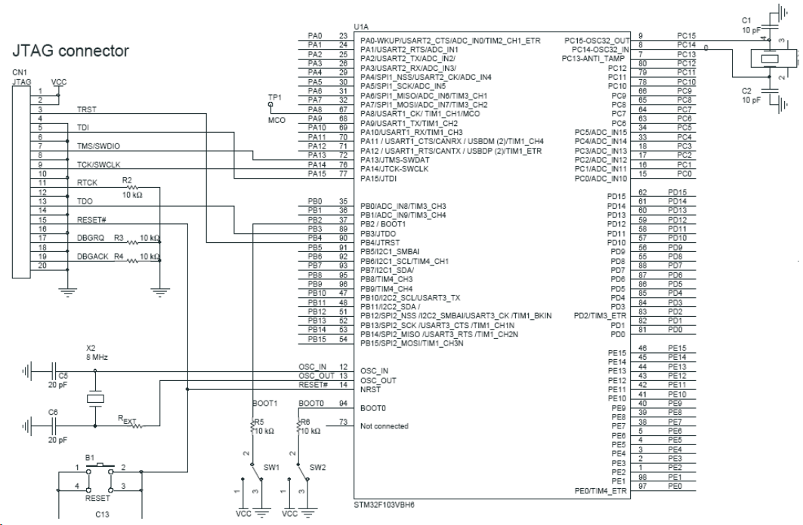
Несмотря на то, что внешняя схема сброса не нужна в схеме включения STM32, на фазе проектирования может оказаться удобным подключение вывода nRST к обычной кнопке сброса. Вывод nRST также подключается к отладочному порту JTAG. Это позволяет отладочному средству управлять сбросом микроконтроллера.
Генераторы
Основной источник внешнего тактирования называется внешним высокочастотным генератором (HSE-генератор). Совместно с генератором может использоваться кварцевый/керамический резонатор или отдельный источник синхронизации. Сигнал внешнего источника синхронизации может иметь прямоугольную, синусоидальную или треугольную форму, но, при этом, заполнение импульсов должно быть 50%-ым, а частота не более 25МГц.
Если же используется внешний кварцевый/керамический резонатор, то его частота должна лежать в пределах 4..16 МГц. Чтобы добиться работы МК на его максимальной частоте 72 МГц, необходимо выбрать такую частоту внешней синхронизации, которая бы нацело делила максимальную рабочую частоту. Это связано с тем, что внутренняя схема ФАПЧ умножает частоту HSE-генератора на целое число.
МК STM32 могут иметь еще один внешний генератор, который называется внешним низкочастотным генератором (LSE-генератор). Он предназначен для синхронизации часов реального времени и оконного сторожевого таймера. Также как и HSE-, LSE-генератор может работать совместно с кварцевым резонатором или внешним сигналом синхронизации снова-таки прямоугольной, синусоидальной или треугольной формы, и с заполнением импульсов 50%. В каждом из этих случаев частота LSE-генератора должна быть равна 32,768 кГц, что необходимо для точной работы часов реального времени. Часы реального времени также могут синхронизироваться внутренним низкочастотным генератором, однако ввиду его недостаточной точности, обычно для реализации функций часов реального времени используется LSE-генератор.
Загрузка
Микроконтроллер может начать свою работу в одном из трех различных режимов загрузки. Эти режимы выбираются с помощью выводов BOOT0 и BOOT1. От выбранного режима загрузки зависит, какую область карты памяти микроконтроллер будет считать началом памяти. МК может исполнять код программы из Flash памяти, внутреннего статического ОЗУ или системной памяти. Если выбирается загрузка из системной памяти, то STM32 начнет свою работу с выполнения запрограммированной производителем загрузочной программы, которая позволяет пользователю перепрограммировать Flash память внутрисистемно.
Для работы в обычном режиме вывод BOOT0 необходимо соединить с GND. Если же планируется использование других режимов, необходимо предусмотреть джамперы для задания различных состояний на выводах управления загрузкой.
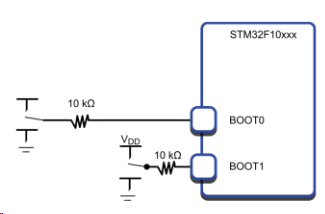
Обычно потребность в этом возникает при обновлении ПО уже на фазе эксплуатации продукции. Программа загрузчика для получения кода программы от ПК по умолчанию использует последовательный интерфейс USART1.
Отладочный порт
Завершающим звеном схемы включения является отладочный порт. Он необходим для подключения отладчика к МК STM32. Отладочная система Cortex CoreSight поддерживает два типа подключений: 5-выводной порт JTAG и 2-выводной последовательный порт Cortex. Оба этих порта задействуют для связи с отладчиком линии ввода-вывода общего назначения. После сброса ЦПУ Cortex назначает этим линиям их альтернативные функции, что дает возможность использовать отладочный порт. При необходимости использования линий отладочного интерфейса, как обычных линий ввода-вывода, необходимо соответствующим образом запрограммировать регистры альтернативных функций. 5-проводной интерфейс JTAG выводится на 20-выводной разъем IDC со стандартным для всех JTAG-совместимых инструментальных средств расположением выводов. Последовательный интерфейс использует порт A_13 для последовательной передачи данных и порт А_14 для синхронизации.
4. СИСТЕМНАЯ АРХИТЕКТУРА
Шина данных и системная шина подключены к матрице высокоскоростных шин AHB. К ней же подключается SRAM и блок DMA. GPIO распределены между двумя шинами APB, связанными с AHB через преобразователи.
Шина APB2 может работать с максимальной частотой 72MHz;
Шина APB1 может работать с максимальной частотой 36MHz;
В качестве шинных мастеров могут выступать ядро или блок DMA. Необходимость в арбитраже возникает только в случае попыток одновременного доступа обоих мастеров к SRAM, шине APB1 или APB2. Гарантированно 2/3 времени доступа предоставляется для блока DMA и 1/3 для ядра.
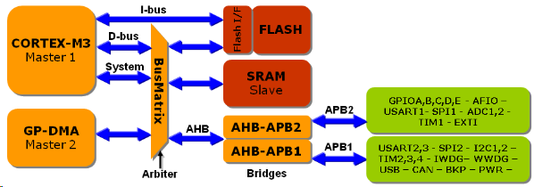
Распределение памяти
Несмотря на то, что у МК STM32 имеется множество внутренних шин, адресное пространство для программиста предлагается как линейное размером 4 Гбайт. Память программ начинается с адреса 0x00000000. Встроенное статическое ОЗУ стартует с адреса 0x20000000. Все ячейки статического ОЗУ расположены в области хранения бит. Регистры УВВ представлены в карте памяти, начиная с адреса 0x40000000, и также расположены в области хранения бит УВВ. Наконец, регистры Cortex находятся в их стандартном месте, начиная с адреса 0xE0000000.
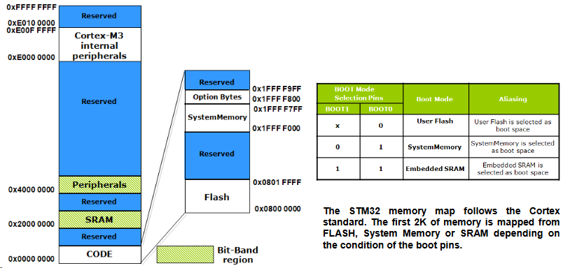
Область Flash памяти разделена на три секции. Первая - Flash память пользователя - начинается с адреса 0x0000000. Далее следует системная память, которая также называется большим информационным блоком. Она представляет собой Flash память размером 4 кбайт, которая запрограммирована производителем кодом программы загрузчика. Последняя секция, которая стартует с адреса 0x1FFFF800, называется малым информационным блоком. В ней находится группа опциональных байт, с помощью которых можно повлиять на некоторые системные настройки микроконтроллера STM32.
Программа загрузчика позволяет посредством интерфейса USART1 загрузить код программы и запрограммировать его во Flash память пользователя. Чтобы перевести МК STM32 в режим загрузчика, нужно на внешних выводах BOOT0 и BOOT1 установить низкий и высокий уровни, соответственно. Если установить именно такие состояния на выводах управления загрузкой, то блок системной памяти начнется с адреса 0x00000000. После сброса, МК STM32, вместо выполнения прикладного кода из Flash памяти пользователя, начнет выполнение программы загрузчика.
С помощью выводов управления загрузкой адрес 0x00000000 вместо Flash памяти пользователя может быть также связан со статическим ОЗУ. Поскольку загрузка статического ОЗУ осуществляется более быстро, то эта возможность может оказаться полезной на фазе проектирования для исполнения кода программы из статического ОЗУ. Кроме того, появляется возможность сократить частоту перепрограммирования Flash памяти.
Максимальное быстродействие
Помимо двух внешних генераторов, у STM32 имеется два внутренних RC-генератора. Сразу после сброса ядро Cortex синхронизируется внутренним высокочастотным генератором, номинальная рабочая частота которого составляет 8 МГц. Второй внутренний генератор - низкочастотный генератор на частоту 32,768 кГц. Данный
генератор предназначен для совместной работы с часами реального времени и сторожевым таймером.
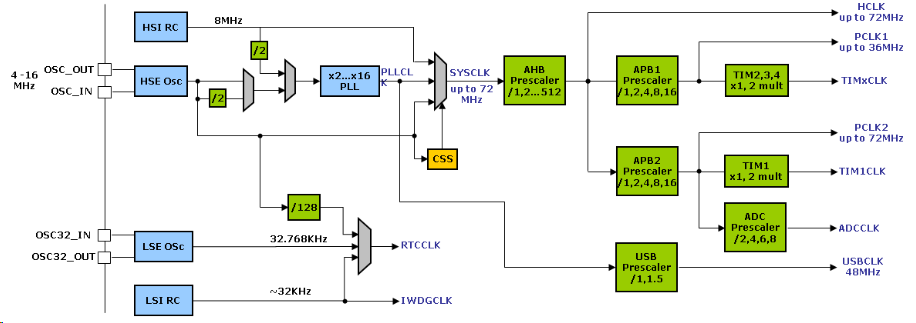
МК STM32 могут работать на частоте 72 МГц без использования внешнего генератора. Недостатком использования внутреннего генератора на частоту 8МГц является его невысокая точность и стабильность. Его нельзя использовать для синхронизации последовательных интерфейсов или для выполнения точных измерений временных интервалов. Независимо от выбранного генератора, чтобы добиться работы ядра Cortex на максимальной частоте 72 МГц, необходимо использовать PLL. Все регистры управления настройками генераторов, PLL и шин находятся в группе управления сбросом и синхронизацией (группа RCC).
Блок фазовой подстройки (PLL - Phase Locked Loop)
Сразу после сброса источником синхронизации ЦПУ является HSI-генератор. В таком состоянии МК его внутренний генератор отключен. Первым шагом по обеспечению работы STM32 с максимальным быстродействием является включение HSE-генератора и ожидание стабилизации его частоты.
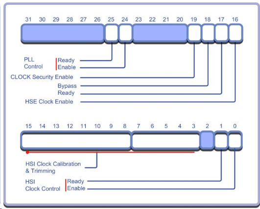
После сброса STM32 запускается на HSI. HSE нужно запускать.
RCC->CR |= 0x10000; //HSE on
// Whait until HSE stable
while(!(RCC->CR &0x00020000))
{
;
}
Включается внешний генератор с помощью регистра RCC_Control. Бит готовности сигнализирует о стабилизации частоты внешнего генератора. После того, как частота
внешнего генератора станет стабильной, его можно выбрать как вход блока PLL. Выходная частота блока PLL зависит от заданного целочисленного значения коэффициента умножения частоты, которое хранится в регистре RCC_PLL_configuration.
Если используется генератор на частоте 8 МГц, для генерации максимальной тактовой частоты 72 МГц необходимо задать коэффициент умножения 9. После настройки коэффициента умножения частоты, необходимо разрешить работу блока PLL посредством регистра управления. Как только выходная частота блока PLL станет стабильной, установится соответствующий флаг и выход PLL можно выбрать в качестве источника синхронизации ЦПУ Cortex.
//HSE clock, PLLx9
RCC->CFGR = 0x001D0000; //Enable PLL
RCC->CR |= 0x01000000;
while(!(RCC->CR & 0x02000000))
{
;
}
//Set the remaining control fields
RCC->CR |= 0x00000001;
//Set the remaining configuration fields
RCC->CFGR |= 0x005D0402;
Настройка шины
Сразу после выбора PLL в качестве источника системной синхронизации ЦПУ будет работать на частоте 72МГц. Чтобы остальная часть МК работала с оптимальным быстродействием, необходимо выполнить настройку шин AHB и APB.
//Enable clocks to the AHB,APB1 and APB2 busses RCC
AHBENR = 0x00000014;
RCC->APB2ENR = 0x00005E7D;
RCC->APB1ENR = 0x1AE64807;
//Release peripheral reset line on APB1 and APB2 buses
RCC->APB2RSTR = 0x00000000;
RCC->APB1RSTR = 0x00000000;
Буфер Flash памяти
Ядро связано с внутренней Flash памятью посредством отдельной шины инструкций I-Bus. Данная шина работает на той же частоте, что и ЦПУ, поэтому, после активизации PLL ядро будет пытаться работать с ней с максимальным быстродействием (72 МГц). Поскольку, большинство операций ЦПУ Cortex выполняет за один период синхронизации, то доступ к Flash памяти будет осуществляться каждые 1.3 нс. Сразу после запуска МК STM32 синхронизируется внутренним генератором частоты 8МГц, поэтому, проблем с доступом к Flash памяти на этом этапе еще нет. Однако сразу после активизации блока PLL и выбора его в качестве источника синхронизации время доступа к Flash памяти окажется слишком большим (35 нс), чтобы ЦПУ Cortex могло работать с максимальным быстродействием.
Чтобы ЦПУ могло работать на частоте 72 МГц без состояний ожидания в цикле доступа, у Flash памяти предусмотрен буфер упреждающей выборки, состоящий из двух 64-битных буферов. Каждый из этих буферов отвечает за считывание 64-битного слова из Flash памяти и дальнейшую передачу 16- или 32-битных инструкций в ЦПУ Cortex. Данный способ хорошо совместим с инструкциями условного перехода набора инструкций Thumb-2 и предсказанием переходов на конвейере Cortex. В ходе нормального функционирования МК, программисту не следует выполнять каких-либо особых действий с буфером Flash памяти. Однако перед выбором PLL в качестве основного источника синхронизации необходимо убедиться, что буфер Flash памяти активен. Управление буфером осуществляется через регистр управления доступом к Flash памяти. Помимо активизации буфера, также необходимо задать количество состояний ожидания, которое необходимо буферу предварительной выборки для считывания 8 байт инструкций из Flash памяти. Задержка выбирается следующим образом:
0 < SYSCLK < 24MHz 0 waitstate
24 < SYSCLK < 48MHz 1 waitstate
48 < SYSCLK < 72MHz 2 waitstate
Данные состояния ожидания действуют между буфером предварительной выборки и Flash памятью и не оказывают влияния на ЦПУ. После выполнения ЦПУ инструкции из первой части буфера, вторая его часть загружается таким образом, чтобы выполнение кода осуществлялось непрерывно с оптимальным быстродействием.
Прямой доступ к памяти (DMA)
Передача данных между УВВ и внутренним статическим ОЗУ может осуществляться, как при участии ЦПУ Cortex, так и автоматически под управлением встроенного блока DMA. Блок DMA микроконтроллеров STM32 имеет 7 раздельно настраиваемых каналов, позволяющих автоматически передавать данные:
Передача память-память выполняется с максимально-возможным для канала DMA быстродействием. Если же в передаче данных участвует УВВ, то блок DMA оказывается под его управлением и передача данных будет происходить по запросу УВВ в любом из направлений. Помимо передачи блоков данных, каждый блок DMA может непрерывно передавать данные в кольцевой буфер. Поскольку встроенные коммуникационные УВВ вообще не оснащены буферами FIFO, то каналы DMA могут использоваться для передачи данных между УВВ и буферами в статическом ОЗУ. Блок DMA был специально разработан под особенности МК STM32 и оптимизирован под частую передачу коротких потоков данных, что типично для микроконтроллерных применений.
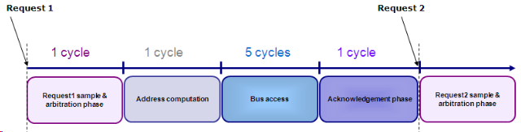
Каждая передача "память-память" состоит из 4 фаз. Фаза доступа к шине длится 5 циклов, а все остальные - 1 цикл.
Каждая передача, осуществляемая блоком DMA, состоит из четырех фаз: фаза выборки и арбитража, фаза вычисления адреса, фаза доступа к шине и фаза подтверждения. Все фазы, кроме фазы доступа к шине, длятся 1 цикл. Фаза доступа к шине (имеет место всякий раз, когда передаются реальные данные) длится 3 цикла и необходима для передачи слова данных. Чтобы блок DMA и CPU Cortex могли работать совместно, их активность чередуется, т.о. DMA не блокирует работу ЦПУ и наоборот.
Каждому из каналов DMA программным способом назначается один из четырех уровней приоритета. На фазе арбитража доступ к шине получает канал с наивысшим уровнем приоритета. Если запрос на передачу отправили два блока DMA и оба имеют одинаковый уровень приоритета, то доступ к шине получит канал с наименьшим порядковым номером.
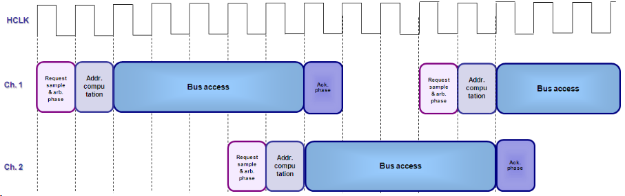
Блок DMA может выполнять фазу арбитража и вычисления адреса, даже если другой канал DMA находится на фазе доступа к шине. Как только активный канал закончит передачу данных по внутренней шине, очередной канал DMA уже будет готов к передаче и незамедлительно приступит к ее осуществлению, когда текущая передача завершится выполнением фазы подтверждения. Таким образом, каналы DMA позволяют не только передавать данные быстрее, чем ЦПУ. Их работа еще и тщательно чередуется, а шина занимается только на время фактической передачи данных.
На каждой фазе доступа к шине три цикла свободны для ЦПУ. При передачах типа память-память этим гарантируется, что ЦПУ будет выделено минимум 60% шины, даже если DMA выполняется непрерывно. Помните, что это касается только передачи данных, а выборку инструкций ЦПУ Cortex осуществляет по отдельной шине инструкций I-code.
В передачах типа память-память каждый из каналов DMA будет занимать шину данных только во время фазы доступа к шине, при этом, на передачу каждого слова данных будет затрачиваться 5 циклов. Из них один цикл - для чтения и еще один - для записи, причем данные циклы чередуются холостыми циклами, во время которых шина освобождается для ЦПУ Cortex. Это означает, что блоки DMA будут использовать не более 40% от пропускной способности шины данных даже во время непрерывной передачи данных на максимальной скорости. При передачах типа УВВ-УВВ и УВВ-память ситуациия несколько более сложная.
Передачи по шине AHB выполняются за два цикла на частоте синхронизации этой шины, а передачи по шине APB требуют для выполнения 2 циклов на частоте синхронизации этой шины и еще 2 цикла на частоте синхронизации шины AHB. Каждая передача блока ПДП состоит из двух периодов передачи по шине и свободного цикла. Например, передача из модуля SPI в статическое ОЗУ состоит из передачи из модуля SPI, из передачи в статическое ОЗУ и из одного свободного цикла. Следовательно,
Блок DMA прост в использовании. В начале необходимо включить синхронизацию блока DMA и вывести его из состояния сброса. Это выполняется через регистр разрешения синхронизации AHB в блоке управления сбросом и синхронизацией.
RCC->AHBENR |= 0x00000001; //резрешение синхронизации блока DMA
После подачи питания на блок DMA каждый из его канлов управляется через 4 регистра. В двух регистрах хранятся адреса источника и получателя (регистр ВВ и ячейка памяти). Данные о размере передачи хранятся в регистре "количества данных" ("number of data"), а общие характеристики DMA-передачи задаются через регистр конфигурации:
Каждому из каналов DMA можно назначить 4 уровня приоритета: "очень высокий", "высокий", "средний" и "низкий". Размер передаваемого слова задается раздельно для памяти и УВВ. Например, мы можем передать 32-битное слово в канал DMA (3 цикла) из памяти, а затем передать четыре 8-битных слова в регистр данных UART (всего потребуется 35 циклов вместо 64, если бы все данные передавали 8-битными порциями). Также имеется возможность инкрементирования адресов памяти и УВВ. Потребность в этом может возникнуть, например, при периодической передаче данных из регистра результата АЦП в массив памяти для дальнейшей обработки. Чтобы задать в каком из направлений, память - УВВ или УВВ - память, необходимо передавать данные, предусмотрен бит направления передачи. При передачах типа память-память необходимо установить бит 14 для передачи данных между двумя буферами в
статическом ОЗУ на максимально-возможной скорости. Использовать каналы DMA можно, как в режиме опроса, так и с использованием прерываний по завершению, половинному завершению и при ошибках передачи. Наконец, после завершения настройки DMA-передачи, необходимо установить бит разрешения работы канала и передача начнется. Передачу память-память можно выполнить с помощью следующего кода программы:
DMA_Channel1->CCR = 0x00007AC0; //configure for mem2mem transfer
DMA_Channel1->CPAR = (unsigned int)src_arry; //set source and destination
DMA_Channel1->CMAR = (unsigned int)arry_dest;
DMA_Channel1->CNDTR = 0x000A; //set size of transfer
TIM2->CR1 = 0x00000001; //start a timer
DMA_Channel1->CCR |= 0x00000001; //start the DMA transfer
while( !(DMA->ISR & 0x0000001) ) //wait till the transfer ends
{
;
}
TIM2->CR1 = 0; //halt the Timer
TIM2->CNT = 0; //Clear the count
TIM2->CR1 = 1; //restart timer
for(index = 0; index < 0xA; index++) //repeat the operation using the CPU
{
arry_dest[index] = arry_src[index];
}
TIM2->CR1 = 0; //halt the timer
}
В приведенном выше коде выполняется передача 10 слов данных между двумя массивами в статическом ОЗУ: вначале с использованием DMA, а затем с использованием только ЦПУ Cortex. В каждом из этих случаев, перед началом передачи запускается таймер и останавливается по завершении передачи. В данном примера блок DMA выполняет передачу за 220 циклов, ЦПУ - за 536.
Несмотря на то, что передачи типа память-память выгодно использовать для инициализации областей памяти, а также для передачи блоков данных, большую часть времени каналы DMA будут использоваться для перемещения данных между памятью и различными УВВ. В связи с этим, каждый из каналов DMA связан с определенной группой УВВ.
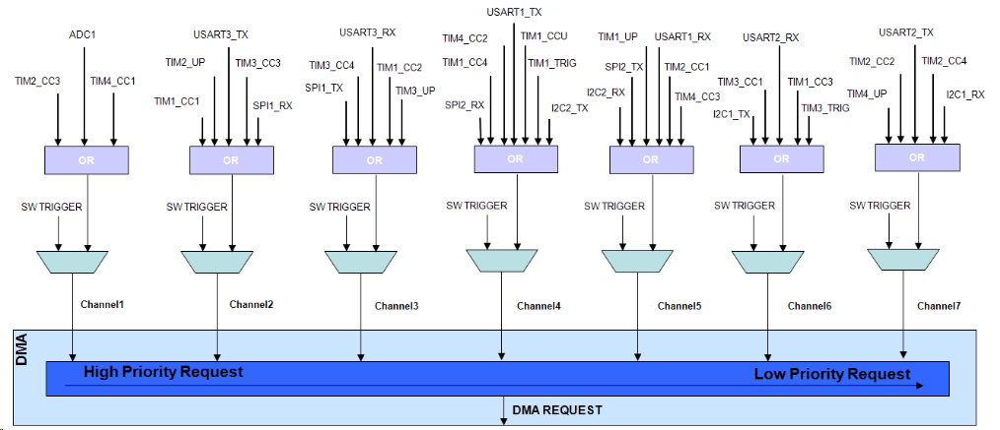
Вначале необходимо инициализировать УВВ и разрешить поддержку им DMA. Затем, нужно настроить соответствующий канал DMA для передачи данных по запросу поддерживаемого им УВВ. Например, более подробно рассматриваемый далее АЦП по завершении каждого преобразования помещает 10-битный результат в регистр результата преобразования. Если DMA не использовать, то ЦПУ будет вынужден периодически обрабатывать прерывания по завершению преобразования АЦП. Если же использовать DMA, то по окончании каждого преобразования АЦП будет генерировать запрос на DMA-передачу, а блок DMA передаст результат преобразования АЦП в статическое ОЗУ по инкрементированному адресу. При таком подходе участие ЦПУ потребуется только для обработки подготовленного массива данных после завершения передачи последней выборки.
Чтобы этот процесс был более эффективен, можно активизировать поддержку кольцевого буфера, что позволит АЦП непрерывно записывать данные в этот буфер. Затем, используя прерывания по половинному и полному завершению DMA передачи, можно создать двойной буфер. После заполнения первой половины буфера генерируется прерывание, которое позволяет перейти к обработке накопленных данных, а, при этом, новые данные будут продолжать накапливаться во второй половине буфера. Аналогичным образом, после заполнения второй части буфера, можно перейти к обработке данных, при этом, DMA начнет перезаполнение буфера новыми данными. Такой же механизм работы DMA можно использовать и совместно с другими УВВ. Единственно, важно обратить внимание, что у коммуникационных УВВ реализованы раздельные каналы DMA приема и передачи. Например, модуль SPI может одновременно передавать данные в обоих направлениях.